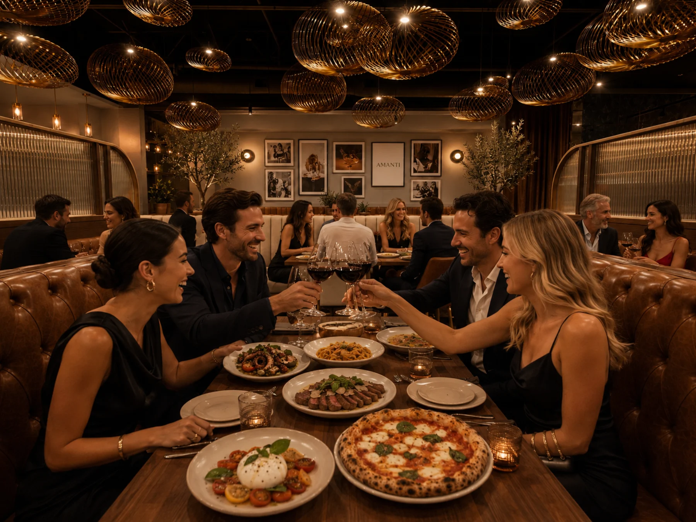
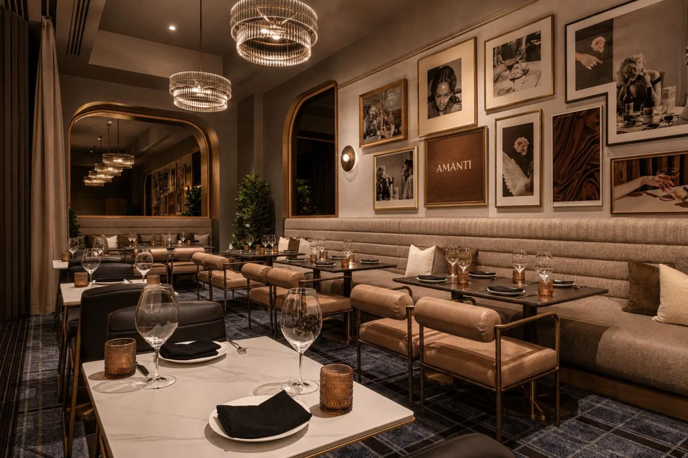
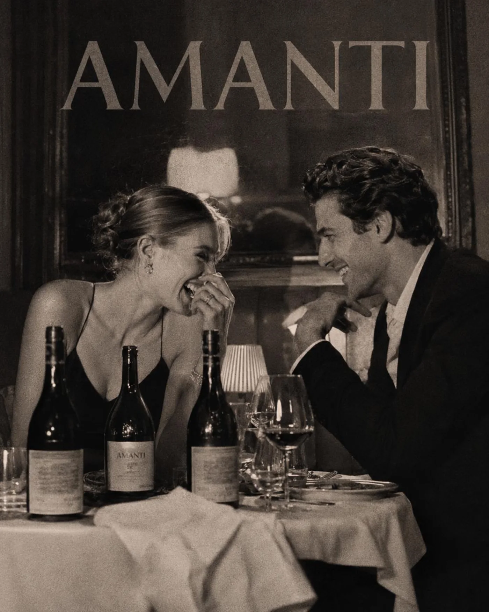
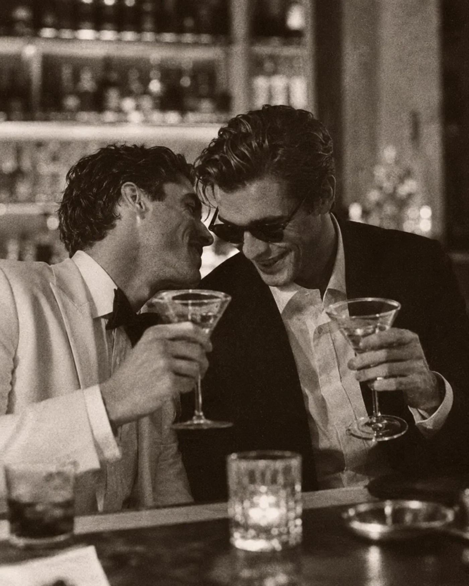
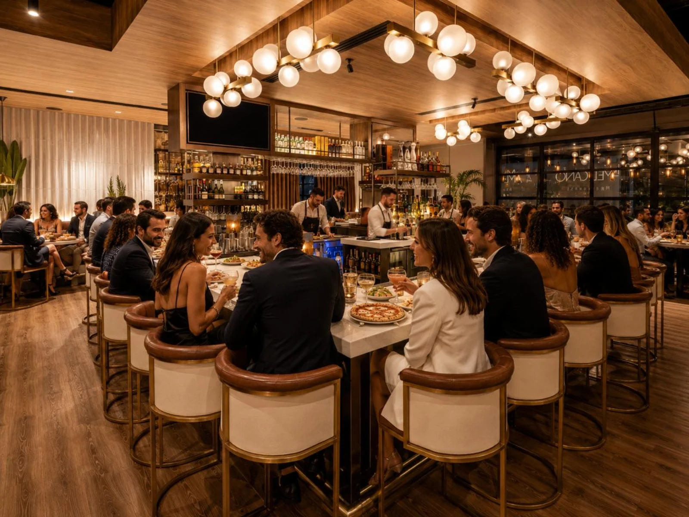
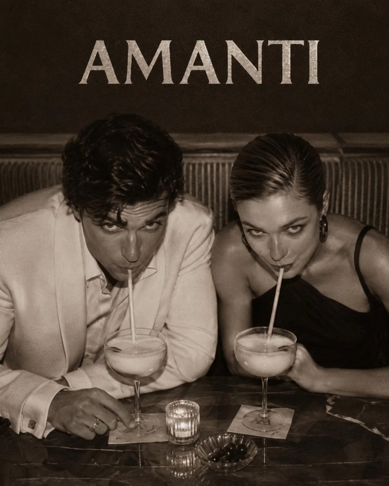
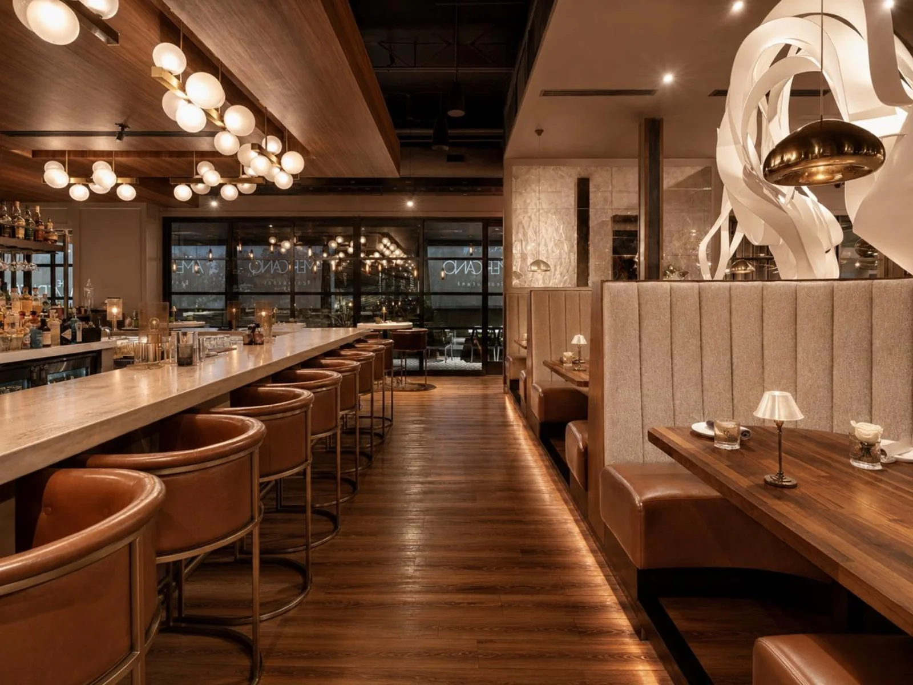
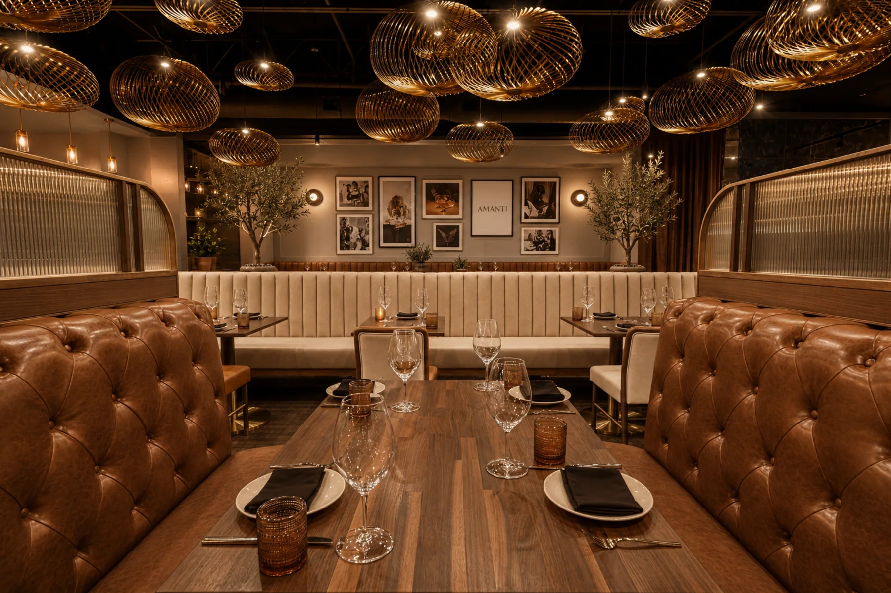
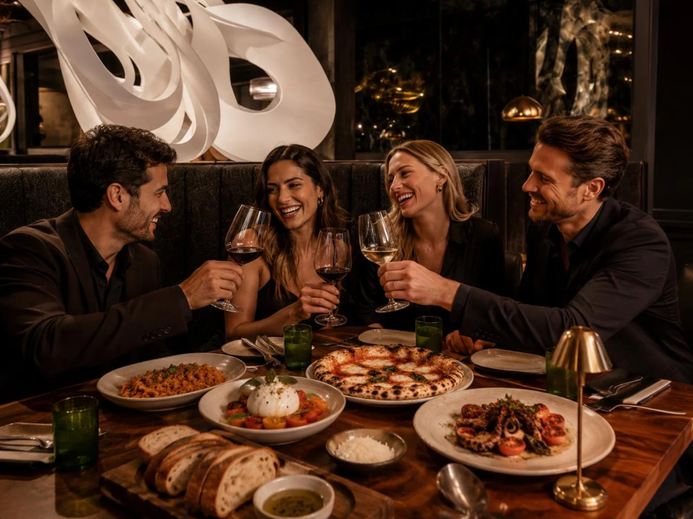
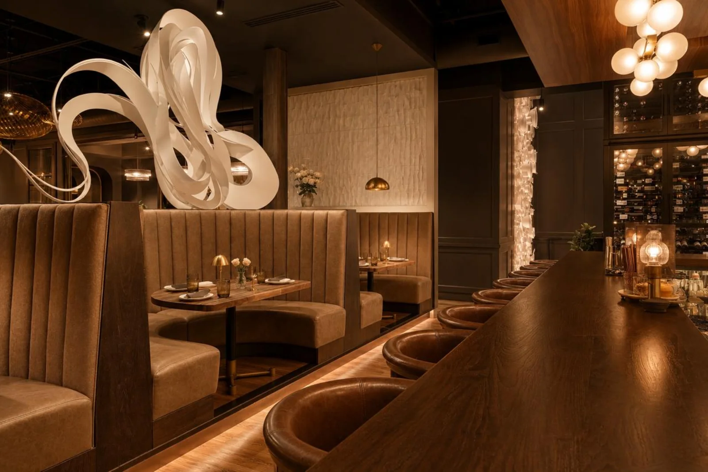

Plaster, walnut, leather, linen, olive leaves, worn-in warmth.

Neighborhood Italian / Scottsdale
AMANTI
An artful neighborhood Italian restaurant: Umbrian roots, warm light, lived-in style, easy hospitality, and a room designed to become a habit.
Brand Thesis
Not a trophy dinner. A place Scottsdale can belong to.
Amanti should feel like a neighborhood table with taste: olive trees, warm plaster, walnut, brass, linen, art on the walls, red wine in motion, and guests who do not have to perform.
The homepage is the feeling. The food has its own gallery. The brand has to speak before anyone reads a menu.
The Room Has Range
Daylight regulars, golden-hour dates, late bar seats.
Amanti should not be one mood. It should shift with the guest: bright enough for repeat weeknight use, warm enough for a date, alive enough for the bar.






Sensory System
The brand should be readable without a logo.
Low conversation, plates landing, bar ice, Italian records without cliché.
Bright at the edges, golden at the table, soft at the bar.
Pizza passed across the table, wine topped without a speech, regulars recognized.
The Feeling
Bright enough for regulars. Warm enough for dates. Designed enough to remember.
The site should feel like walking past the windows before dinner: art, sound, texture, a little glow, and a promise that the food will be easy to love.

The Room
Warm, light, social, and easy to use.
Umbrian Root
Central Italy as memory, not costume. Umbria first, then Tuscany, Lazio, Abruzzo.
Neighborhood Ease
Guests understand the place quickly: come often, bring people, order without anxiety.
Artful Utility
Beautiful, but useful. The design supports repeat visits, not just opening-week curiosity.


How People Use It
A brand that works for the regular, the date, the family, and the bar seat.
Tuesday Pasta
Low-pressure dinner, wine, conversation, home before it gets late.
Pizza + Kids
Useful for families without letting the room become careless.
Date Night
Warm light, better music, easy food, enough polish to feel chosen.
Bar Seat
A solo plate, a cocktail, a pizza split late, no production.
Visit
Amanti Scottsdale
17797 N Scottsdale Rd
Scottsdale, AZ 85255
Reservations, opening hours, private dining, and launch events will be released soon.